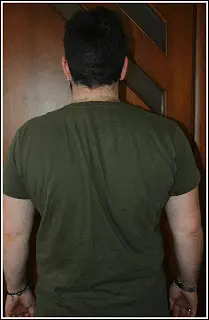
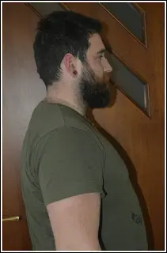
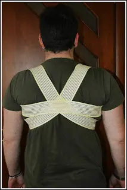
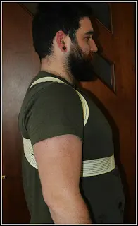
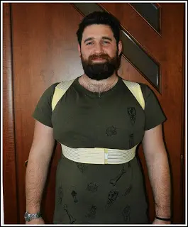

Fascia Posturale correttiva
Sappiamo benissimo che ognuno di noi assume una postura sempre più scomoda, tutto per alleviare dolori e sentirci più comodi. Tutto questo però, ci porta a delle complicazioni. Infatti, anche stando seduti alla scrivania oppure mentre mangiamo a tavola, se osserviamo bene, non siamo mai seduti in modo corretto e ciò ci porta poi con gli anni a dolori muscolari talvolta molto fastidiosi.


Oggi voglio parlarvi di una fascia posturale. Sapete bene che nel mio blog parlo di tanti prodotti e molti dei quali sono solo per la salute fisica e l'igiene personale; oltre al fatto che vi presento, di tanto in tanto, prodotti nuovi e simpatici.
Oggi appunto è la volta dellaSalute fisica.
Terapia posturale
Con pochi euro possiamo acquistare una alternativa a tante terapie; che ovviamente non va a sostituire ma sicuramente a migliorare le nostre abitudini quotidiane.
Ciò di cui parlo è una fascia non rigida ma bensì molto morbida e leggera. Uuna fascia che va a stringere da sotto al petto tirando le spalle in su, non so se mi sono spiegata bene, ma potete vedere il tutto nella foto.


Poiché è appunto una fascia per sostenere le spalle e dare quindi una corretta postura, la cosa più consigliabile è quella di usarla per lavori di ufficio o per chi lavora alla guida.
È naturale che portando questa fascia non possiamo ottenere dei miracoli, c'è bisogno anche di molta volontà. Essendo appunto una fascia morbida, se non si vuole usufruire delle sue capacità è semplice poter acquisire una posizione scomoda tipo al PC. sapendo invece di avere una fascia posturale che ci sostieni e ci aiuta, dobbiamo anche noi mettere la volontà di sederci un pochino più corretti e più diritti.
La fascia è color carne quindi può essere portata sotto alle t-shirt o magari sotto ai vestitini per le donne, o addirittura sotto le camicie per gli uomini.
Consigli:

Un altro consiglio che mi sento di dare è quello di non portare alla massima tensione la fascia già dai primi giorni, in quanto potremmo incorrere poi a dei dolori forti alle spalle ma, anzi vi consigli di stringere la fascia giorno dopo giorno un pochino di più.
Dopo qualche giorno noterete che non ve ne accorgerete nemmeno di averla addosso. Ha una funzione elastica ben distribuita, questo grazie alle 9 righe di fascette elastiche, la larghezza del velcro permette di impostare il livello di forza che vogliamo sentire sulle spalle per correggere difetti posturali.
Insomma ad un prezzo modico potremmo aiutarci a sentirci un pochino meglio.
Prezzo: 24,50€
Per acquistare questo prodotto CLICCA QUI